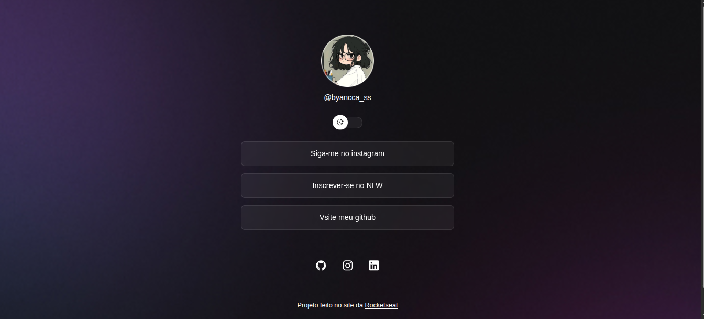

Projeto em destaque
Link Page — NLW Discover
Página de links personalizada com alternância de tema claro/escuro, persistência de preferência no navegador e efeito de vidro fosco na interface. Construída durante a trilha Explorer da Rocketseat.
HTML5CSS3JavaScript